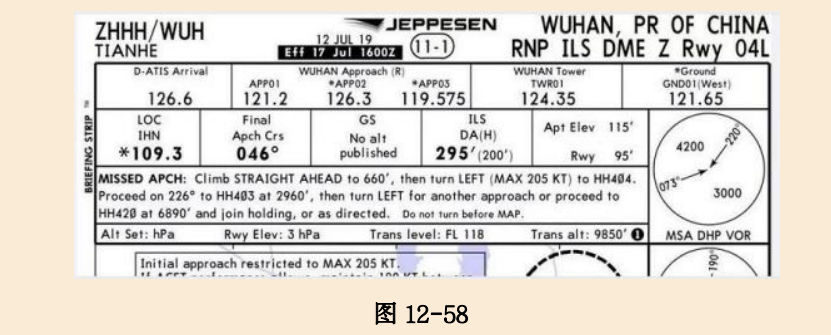
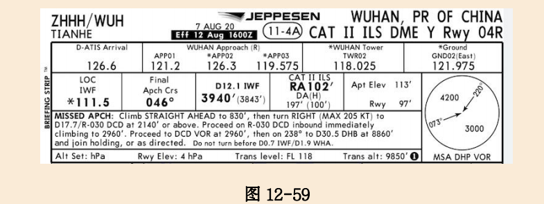

2023华东题库(2069题)
001~200
技巧：全部多选题只有AB，ABC，ABCD这三种答案。注意机考可能会打乱顺序。
10001
民用航空器机组由（ ）和其他空勤人员组成。（ ）应当由具有独立驾驶该型号民用航空器的技术和经验的驾驶员担任。
A、机长 机长
B、机长 副驾驶
C、领航员 机长
D、机长 乘务长
A
10002
民用航空器的操作由（ ）负责，机长应当严格履行职责，保护民用航空器及其所载人员和财产的（ ）。（ ）在其职权范围内发布的命令，民用航空器所载人员都应当执行。
A、机长、安全、机长
B、机长、安全、驾驶员
C、驾驶员、安全、机长
D、驾驶员、安全、驾驶员
A
10003
飞行前，（ ）应当对民用航空器实施必要的检查；未经检查，不得起飞。
A、所有机组成员
B、副驾驶
C、安全员
D、机长
D
10004
（ ）发现民用航空器、机场、气象条件等不符合规定，不能保证飞行安全的，有权拒绝起飞。
A、旅客
B、机长
C、机务
D、乘务长
B
10005
飞行中，对于任何破坏民用航空器、扰乱民用航空器内秩序、危害民用航空器所载人员或者财产安全以及其他危及飞行安全的行为，在保证安全的前提下，（ ）有权采取必要的适当措施。
A、安全员
B、乘务长
C、机长
D、管制员
C
10006
飞行中，遇到特殊情况时，为保证民用航空器及其所载人员的安全，（ ）。
A、机组成员有权对民用航空器作出处置
B、飞行机组成员有权对民用航空器作出处置
C、乘务员有权对民用航空器作出处置
D、机长有权对民用航空器作出处置
D
10007
机长发现机组人员不适宜执行飞行任务的，为保证飞行安全，（ ）。
A、有权提出调整
B、经签派员同意后可以调整
C、经公司同意后可以调整
D、经局方同意后可以调整
A
10008
民用航空器遇险时，机长有权采取一切必要措施，并指挥（ ）采取抢救措施。
A、飞行机组人员
B、机组人员
C、航空器上其他人员
D、机组人员和航空器上其他人员
D
10009
在必须撤离遇险民用航空器的紧急情况下，下列表述不正确的是：
A、机长必须采取措施，首先组织旅客安全离开民用航空器
B、未经机长允许，机组人员不得擅自离开民用航空器
C、机长应当最后离开民用航空器
D、只要机长发布了撤离信号，采取相应措施，即可离开飞机。
D
10010
民用航空器（ ），机长应当直接或者通过空中交通管制单位，如实将事故情况及时报告国务院民用航空主管部门。
A、产生差错
B、发生事故
C、产生交通冲突
D、触发警告
B
10011
飞行中，机长因故不能履行职务的，（ ）；在下一个经停地起飞前，民用航空器所有人或者承租人应当指派新机长接任。
A、由仅次于机长职务的驾驶员代理机长
B、由其他驾驶员代理机长
C、由乘务长代理机长
D、由其他机组成员代理机长
A
10012
从事飞行的民用航空器，至少应当携带下列证书/执照：
A、民用航空器国籍登记证书、民用航空器适航证书、民用航空器保险凭证。
B、民用航空器国籍登记证书、民用航空器适航证书、（装有无线电设备的民用航空器）无线电台执照。
C、民用航空器国籍登记证书、民用航空器适航证书、民用航空器型号合格证。
D、民用航空器国籍登记证书、民用航空器适航证书、民用航空器运营人运行规范。
B
10013 (多选)
航路、航线飞行或者转场飞行的航空器的起飞，应当根据飞行人员和航空器的准备情况，起飞机场、降落机场和备降机场的准备情况以及天气情况等确定；有下列情况不得起飞：
A、航空器未按规定携带备用燃料的；
B、飞行人员尚未完成飞行准备、飞行准备质量不符合要求、驻机场航空单位或者航空公司的负责人未批准飞行的；
C、飞行人员未携带飞行任务书、飞行气象文件及其他必备飞行文件的；
D、航空器机翼前缘存在少许冰、霜、雪的；
ABCD
10014
遇有紧急情况，飞行安全受到威胁时，机长可以决定改变原配备的飞行高度层，但必须立即报告飞行管制部门，并对该决定负责。改变高度层的方法是：从航空器飞行的方向（ ），并（ ），再（ ）平行原航线上升或者下降到新的高度层，然后转回原航线。
A、向左转 30 度、以此航向飞行20 公里、右转
B、向左转 30 度、偏置 20 公里、右转
C、向右转 30 度、以此航向飞行20 公里 、左转
D、向右转 30 度、偏置 20 公里、左转
C
10015
《一般运行和飞行规则》依据________________制定。
A、《中华人民共和国宪法》
B、《中华人民共和国民用航空法》
C、《中华人民共和国基本飞行规则》
D、《中华人民共和国民法通则》
B
10016
在以取酬或出租为目的的商业飞行中担任航空器驾驶员的人员,应当至少取得（ ）和相应的航空器等级和运行许可。
A、私用驾驶员执照
B、商用驾驶员执照
C、航线驾驶员执照
D、飞行教员执照
B
10017
为他人提供民用航空器驾驶服务并以此种服务获取报酬的驾驶员,应当至少取得（ ）和相应的航空器等级和运行许可。
A、私用驾驶员执照
B、商用驾驶员执照
C、航线驾驶员执照
D、飞行教员执照
B
10018
机长必须保证（ ）持有登记国颁发或认可的、具有适当等级并且现行有效的执照,并且机长必须对（ ）保持其胜任能力表示满意。
A、每个飞行机组成员、机组成员
B、每个机组成员、飞行机组成员
C、每个机组成员、机组成员
D、每个飞行机组成员、飞行机组成员
D
10019
下列描述不正确的是：
A、机长必须负责确保:如果飞行机组任何成员因受伤、患病、疲劳、酒精或药物的影响而无法履行其职责时,不得开始飞行。
B、机长必须负责确保:当飞行机组成员由于疲劳、患病、缺氧等原因造成的功能性损害导致执行任务的能力显著降低时,不得越过最近的合适机场继续飞行。
C、当航空器的机械、电子或结构出现不适航状态时,机长应当中断该次飞行。
D、当运行中的航空器出现故障，使飞行机组工作负荷提高时，不得越过最近的合适机场继续飞行。
D
A、10020
航空器的机长负责确认航空器是否处于可实施安全飞行的状态。当航空器的机械、电子或结构出现（ ）,机长应当中断该次飞行。
A、警戒信息时
B、警告信息时
C、故障时
D、不适航状态时
D
10021
从起飞至着陆的整个飞行过程中,关于飞行机组成员的要求中不正确的是:
A、坚守各自飞行岗位,除非为了履行与该航空器运行有关的职责必须离开岗位。
B、在岗位上时应当系紧安全带。
C、坚守各自飞行岗位,除非出于生理需要必须离开岗位
D、当机长在经批准的休息区休息或因生理需要离开岗位时，对于飞行安全无需承担责任。
D
10022(多选)
下列描述正确的是：
A、如果双向无线电通信失效发生在目视飞行规则条件下,航空器驾驶员应当按目视飞行规则继续飞行,并尽快着陆。
B、在仪表飞行规则下，如果双向无线电通信失效发生在目视飞行规则条件下,航空器驾驶员应当按目视飞行规则继续飞行,并尽快着陆。
C、如果在无线电通信失效后遇到目视飞行条件,航空器驾驶员应当按仪表飞行规则继续飞行,并尽快着陆。
D、如果在无线电通信失效后遇到目视飞行条件,航空器驾驶员应当按仪表飞行规则继续飞向着陆机场。
AB
10023
按仪表飞行规则运行的航空器发生导航、进近或通信设备 故障时,机长应当尽快向（ ）报告。
A、空中其他航空器
B、空中交通管制
C、民航管理局
D、公司运控中心
B
10024
涡轮动力运输类飞机起飞时,应当符合
A、加速—停止距离不大于跑道长度加上停止道（STOPWAY）长度(如有时)
B、起飞距离不大于可用跑道长度加上净空道长度(如有时)
C、起飞滑跑距离不大于跑道长度
D、以上全部。
D
10025
机长,是指_______________________。
A、在飞行时间内负责航空器的运行和安全的驾驶 员
B、在空中飞行时间内负责航空器的运行和安全的驾驶员
C、在飞行时间内负责航空器的运行和操纵的驾驶 员
D、在空中飞行时间内负责航空器的运行和操纵的驾驶员
A
10026
副驾驶,是指______________________。
A、在飞行时间内除机长以外的、在驾驶岗位执 勤的持有执照的驾驶员,但不包括在航空器上仅接受飞行训练的驾驶员
B、在空中飞行时间内除机长以外的、在驾驶岗位执 勤的持有执照的驾驶员,但不包括在航空器上仅接受飞行训练的 驾驶员
C、在飞行时间内除机长以外的、在驾驶岗位执 勤的持有执照的驾驶员,包括在航空器上仅接受飞行训练的驾驶员
D、在空中飞行时间内除机长以外的、在驾驶岗位执 勤的持有执照的驾驶员,包括在航空器上仅接受飞行训练的驾驶员
A
10027
《民用航空器驾驶员合格审定规则》依据_____________制定。
A、《中华人民共和国宪法》
B、《中华人民共和国民用航空法》
C、《中华人民共和国基本飞行规则》
D、《中华人民共和国民法通则》
B
10028
航空器,是指_________________________________。
A、是在大气层内或大气层外空间飞行的器械。
B、由空气的反作用而不是由空气对地面发生的 反作用在大气中取得支撑的任何机器
C、动力驱动的重于空气的一种航空器,其飞行升力主要由给定飞行条件下保持不变的翼面上的空气动力反作用取得
D、是指重于空气的主要依靠以发动机为动力的升空装置或发动机推力在飞行期间升空,并且依靠非旋转翼型在水平飞行时升空
B
10029
飞机,是指___________________________________。
A、由空气的反作用而不是由空气对地面发生的 反作用在大气中取得支撑的任何机器
B、是指一种重于空气的航空器,其飞行升力主要由 在垂直轴上一个或几个动力驱动的旋翼上的空气反作用取得.
C、是指一种重于空气的航空器,其飞行升力主要由 在给定飞行条件下保持不变的翼面上的空气动力反作用取得,在自由飞行阶段不使用自 身动力.
D、动力驱动的重于空气的一种航空器,其飞行升力主要由给定飞行条件下保持不变的翼面上的空气动力反作用取得
D
10030
威胁,是指__________________________________。
A、超出飞行机组影响能力之外发生的事件或差错,它增加了运行复杂性并且应当加以管理以保障安全余度。
B、飞行机组影响能力范围发生的事件或差错,它增加了运行复杂性并且应当加以管理以保障安全余度。
C、飞行机组的一项行动或不行动,导致偏离组织 或飞行机组的意图或期待。
D、飞行机组的一项行动或不行动,它增加了运行复杂性并且应当加以管理以保障安全余度。
A
10031
A、威胁管理,是指__________________________________。
A、查出威胁并且采取对策予以回应,从而减轻或消除威胁的后果,降低出现差错的概率或航空器非理想状态的过程。
B、查出威胁并且采取对策予以回应,从而减轻或消除差错的后果,降低再次出现差错的概率或航空器非理想状态的过程。
C、查出威胁并且采取对策予以回应,从而消除差错的后果,降低再次出现威胁的概率的过程。
D、查出威胁并且采取对策予以回应,从而减轻差错的后果,降低出现航空器非理想状态概率的过程。
A
10032
差错,是指__________________________________。
A、超出飞行机组影响能力之外发生的事件或差错,导致偏离组织 或飞行机组的意图或期待。
B、飞行机组影响能力范围发生的事件或差错,它增加了运行复杂性并且应当加以管理以保障安全余度
C、飞行机组的一项行动或不行动,导致偏离组织 或飞行机组的意图或期待。
D、飞行机组的一项行动或不行动,它增加了运行复杂性并且应当加以管理以保障安全余度
C
10033
差错管理,是指__________________________________。
A、查出差错并且采取对策予以回应,从而减轻或消除差错的后果,降低再次出现差错的概率或航空器非理想状态的过程。
B、查出差错并且采取对策予以回应,从而减轻或消除差错的后果,降低威胁出现的概率或航空器非理想状态的过程。
C、查出差错并且采取对策予以回应,从而减轻或消除威胁的后果,降低出现差错的概率或航空器非理想状态的过程。
D、查出差错并且采取对策予以回应,从而减轻或消除威胁的后果,降低出现威胁的概率或航空器非理想状态的过程。
A
10034(多选)
航空器类别等级包括：
A、飞机
B、直升机
C、飞艇
D、倾转旋翼机
ABCD
10035(多选)
飞机级别等级包括:
A、单发陆地
B、多发陆地
C、单发水上
D、多发水上
ABCD
10036
以下哪个航空器不需要型别等级:
A、审定为最大起飞全重在５,７００千克以下的飞机;
B、审定为最大起飞全重在３,１８０千克以上的直升机和倾转旋翼机;
C、涡轮喷气动力的飞机;
D、局方通过型号合格审定程序确定需要型别等级的其他航空器.
A
10037
执照持有人在执照有效期满后不得继续行使该执照所赋予的权利。执照持有人应在执照有效期期满前（ ）向局方申请重新颁发执照,并出示最近一次有效的熟练检查或定期检查记录。执照在有效期内因等级或备注发生变化重新颁发时,其有效期自重新颁发之日起计算。执照过期的申请人须重新通过相应的理论及实践考试,方可申请重新颁发。
A、一个月内
B、二个月内
C、三个月内
D、四个月内
C
10038
未通过理论考试或者实践考试的申请人符合下列规定可 以申请再次考试:
A、至少60个日历日之后，方可再次申请考试。
B、接受了教员提供的补充训练;同时得到向申请人提供补充训练的授权教员的签字批准。
C、接受了授权教员提供的补充训练,并且经公司评估认为申请人有能力通过考试。
D、接受了授权教员提供的补充训练,并且该教员认为申请人有能力通过考试;同时得到向申请人提供补充训练的授权教员的签字批准。
D
10039(多选)
驾驶员已知身体有缺陷或者已知身体缺陷加重,不符合现行体检合格证标准时,不得担任（ ）。
A、机长
B、飞行机组必需成员
C、检查员
D、监察员
AB
10040
机长近期飞行经历要求：在载运旅客的航空器或型号合格审定要求配备一名以上飞行机组成员的航空器上任机长的驾驶员,在该次飞行前９０天内,在同一类别、级别和型别(如适用)的航空器上,作为飞行操纵装置的唯一操纵者,应当至少完成（ ）。
A、担３次起飞
B、３次全停着陆
C、３次起飞和３次全停着陆
D、３次起飞或者３次全停着陆
C
10041(多选)
商用驾驶员执照持有人具有下列权利:
A、行使相应的私用驾驶员执照持有人的所有权
B、在以取酬为目的经营性运行的航空器上担任机长或副驾 驶,但不得在相应运行规章要求机长应当具有航线运输驾驶员执 照的运行中担任机长
C、为获取酬金而担任机长或副驾驶
D、
ABC
10042(多选)
在下列情形下,执照持有人不再具有按照本规则颁发的商 用驾驶员执照权利:
A、执照持有人由于故意行为,致使公共财产、国家和人民利 益遭受重大损失的；
B、执照持有人在事故和事故征候调查期间, 故意隐瞒事实、 伪造证据或销毁证据的;
C、被追究刑事责任的。
D、
ABC
10043(多选)
飞行教员在其所持驾驶员执照种类的限制内,可以分别提供本规则颁发下列执照和等级所要求的地面和飞行训练，其中型别教员可以提供:
A、航线运输驾驶员执照(如适用)
B、型别教员等级
C、仪表等级
D、航空器型别等级
ABCD
10044(多选)
驾驶员执照持有人在饮用任何含酒精饮料之后的８小时之内或处在酒精作用之下,血液中酒精含量等于或者大于０．０４％（0.04克/210升）,或受到任何药物影响损及工作能力时,不得担任机组成员。以下描述正确的是：
A、如违反以上规定则当责令当事人立即停止担任飞行机组成员,并给予警告,;
B、暂扣执照一至六个月的处罚;
C、情节严重的,应当给予吊销执照的处罚
D、构成犯罪的,依法追究刑事责任
ABCD
10045
驾驶员执照持有人应当按照局方的要求接受酒精或者药物检 验或提供检验结果。
A、拒绝、阻碍接受酒精、药物检验或提供检验结果的执照持有人,责令该员立即停止第二日飞行运行活动,并移送公安机关进行处理。
B、拒绝、阻碍接受酒精、药物检验或提供检验结果的执照持有人,责令该员立即停止当日飞行运行活动,并移送公安机关进行处理。
C、拒绝、阻碍接受酒精、药物检验或提供检验结果的执照持有人,责令该员立即停止当日飞行运行活动,并报公司进行处理。
D、拒绝、阻碍接受酒精、药物检验或提供检验结果的执照持有人,责令该员立即停止第二日飞行运行活动, 并报公司进行处理。
B
10046
法规要求应急撤离程序的实际演示应该在（）秒内完成。
A、60秒
B、90秒
C、120秒
D、180秒
B
10047
从跑道进近端的超障面与跑道中心线的交点至跑道最远端的距离指的是（）。
A、跑道有效长度
B、跑道可用长度
C、全跑道长度
D、全跑道可用长度
A
10048
起飞备降场：对于双发动机飞机，备降机场与起飞机场的距离不大于飞机使用一发失效的巡航速度在静风件下飞行（）小时的距离。
A、条1
B、2
C、3
D、4
A
10049(多选)
适航性：是指（）符合局方批准的设计，并处于满足安全运行的状态。
A、飞机
B、发动机
C、螺旋桨
D、零部件
ABCD
10050(多选)
飞行记录器：是指安装在飞机上的用于事故/事件调查目的的记录装置，包括（）等。
A、飞行数据记录器
B、驾驶舱话音记录器
C、事件记录器
D、信息记录器
AB
10051
国际定期载客运行的目的地备降机场能见度至少为（）米，或者高于目的地机场所用仪表进近程序最低的适应能见度最低标准3200米以上，取大者。
A、800
B、1600
C、3200
D、4800
D
10052
121部应急撤离程序的演示证明旅客座位数大于（）座的每个型号飞机，能够使包括机组成员在内的满载量成员在（）秒含以内撤离飞机。
A、44，60
B、44，70
C、44，90
D、46，90
C
10053
驾驶舱话音记录应当至少能够保存最后（）分钟运行中所记录的信息。
A、30分钟或者2小时（区别于特定飞机）
B、40分钟
C、50分钟
D、60分钟或者2小时（区别于特定飞机）
A
10054
为执行飞行任务的机长和副驾驶如只能提供同种餐食，必须间隔（）小时用餐。
A、2
B、1
C、1.5
D、0，5
B
10055
担任飞行机组必须成员的驾驶员应当在（）个日历月之内在所服务的机型型别上完成熟练检查，否则不得担任飞行机组必需成员。
A、6
B、12
C、24
D、
A
10056
对于每个飞行机组成员，在前（）个日历月之内，应当圆满完成（121.455条）规定的服务于每一机型复训的地面和飞行训练。
A、6
B、12
C、24
D、
B
10057
局方可以为申请人颁发不超过（）天的驾驶员临时执照。
A、30天
B、60天
C、90天
D、120天
D
10058
航线运输驾驶员执照的资格要求需要年满（）周岁。
A、18
B、19
C、20
D、21
D
10059
驾驶员执照持有人不得在饮用含酒精饮料（）时间内担任机组成员。
A、8h
B、10h
C、12h
D、14h
A
10060
航线运输驾驶员执照持有人可以在从事公共航空运输的航空器上担任（）岗位：
A、机长
B、副驾驶
C、机长和副驾驶
D、
C
10061
在没有规定过渡高度或过渡高和过渡高度层的机场，航空器起飞后，上升到（）米高时，应当将航空器上气压高度表的气压刻度1013.2百帕对正固定指标。
A、300
B、600
C、900
D、
B
10062
RVSM空域缩小垂直间隔标准为（）米。
A、300米
B、600米
C、900米
D、
A
10063
飞行记录器应当在航空器（）阶段保持连续工作。
A、以自身动力滑出开始
B、离地后
C、全部运行过程中
D、
C
10064
关于民用航空器使用禁区的规定：
A、绝对不得飞入
B、符合目视气象条件方可飞入
C、按照国家规定批准后方可飞入
D、
C
10065
（）应当对航空器适航性负责。
A、合格证持有人
B、局方
C、维修单位
D、航空器或部件制造厂家
A
10066
在一般国内运输机场空域内运行时，大型或涡轮发动机的飞机在进入机场起落航线时，通常不得低于机场标高以上（），直至为安全着陆需要下降到更低高度。
A、300米
B、450米
C、600米
D、
B
10067
按照RVSM运行要求，当1997年4月9日之后申请型号合格证的航空器在无颠簸、无阵风的条件下进行直飞或平飞时，该高度自动控制系统可以控制高度在要求的高度±（）的偏差范围内。
A、10米
B、15米
C、20米
D、30米
C
10068
空勤人员因身体原因暂停履行职责超过（）天，需要体检鉴定机构申请单科体检。
A、20天
B、30天而不足90天
C、60天
D、90天
B
10069
空勤人员由于身体原因暂停履行职责，超过（）天的时间需要重新申请体检鉴定，并获得相应级别的体检合格证后方可恢复飞行
A、30
B、60
C、90
D、120
C
10070
明显的丧失能力易发觉，失能的机组成员可能从座椅上倒下。但轻度丧失能力不易发觉，可使用（）来判断机组失能。
A、一次交流原则
B、两次交流原则
C、多次交流原则
D、
B
10071
实际着陆距离ALD是从由超障面与该跑道交点上方（）算起，作全停着陆的距离。
A、50ft
B、100ft
C、150ft
D、200ft
A
10072
以下哪种滑水在任何速度下都会发生？
A、动力滑水
B、粘性滑水
C、橡胶还原滑水
D、
B
10073
CCAR-91部全称是什么？
A、中华人民共和国民用航空法
B、民用航空器适航管理条例
C、一般运行和飞行规则
D、民用航空器驾驶员合格审定规则
C
10074
CCAR-121部全称是什么？
A、中华人民共和国民用航空法
B、民用航空器适航管理条例
C、小型航空器商业运输运营人运行合格审定规则
D、大型飞机公共航空运输承运人运行合格审定规则
D
10075
高空空域是指标准海平面气压（）以上的空域。
A、3000米（含）
B、3600米(含）
C、6000米（不含）
D、7200米（不含）
C
10076
按仪表飞行规则飞行时，在距预定航路中心、航线两侧各25000米水平距离范围内，在平原地区不得在距最高障碍物（）米的高度以下，在高原和山区不得在距最高障碍物（）米的高度以下飞行。
A、300 600
B、400 600
C、400 900
D、300 900
B
10077
除经局方批准并得到空中交通管制的同意外,航空器驾驶员不得在修正海平面气压高度（ ）以大于（ ）的指示空速运行航空器。
A、３千米(10000英尺)以下、490千米/小时(270海里/小时)
B、３千米(10000英尺)以下、460千米/小时(250海里/小时)
C、3.6千米(12000英尺)以下、490千米/ 小时(270海里/小时)
D、3.6千米(12000英尺)以下、460千米/小时(250海里/小时)
B
10078
除经空中交通管制批准外,在距机场中心（ ）范围内,离地高度７５０米(２５００英尺)以下不得以（ ）的指示空速运行航空器。
A、15千米(8海里)、大于370千米/小时(200海里/小时)
B、15千米(8海里)、大于340千米/小时(180 海里/小时)
C、7.5千米(４海里)、大于370千米/小时(200海里/小时)
D、7.5千米(４海里)、大于340千米/小时(180海里/小时)
C
10079
实施121部运行的航空器，机上应急设备的描述不正确的是：
A、驾驶舱内应当至少装备一个便于飞行机组使用的手提灭火器。
B、载运旅客飞机应当装备有从每个客舱乘务员座位处易于接近的手电筒及其储放装置。
C、每架飞机应当配备至少一把应急斧。
D、驾驶舱内至少装备两条可以用做撤离的逃离绳。
D
10080
实施121部的运行时，对于座舱气压高度（ ）飞行,如果在这些高度上,则对于30分钟后的那段飞行应当为（ ）的旅客提供足够的氧气。
A、3000米(10000英尺)以上至4300米(14000英尺)(含)的、10％
B、3000米(10000英尺)以上至4300米(14000英尺)(含)的、5％
C、3600米(12000英尺)以上至4300米(14000英尺)(含)的、10％
D、3600米(12000英尺)以上至4300米(14000英尺)(含)的、5％
A
10081
实施121部的运行时，对于座舱气压高度（ ）的飞行,足以为（ ）的旅客在这些高度的飞行中提供氧气。
A、4300米(14000英尺)以上至4600米 (15000英尺)(含)、40％
B、4300米(14000英尺)以上至4900米 (16000英尺)(含)、40％
C、4300米(14000英尺)以上至4600米 (15000英尺)(含)、30％
D、4300米(14000英尺)以上至4900米 (16000英尺)(含)、30％
C
10082
实施121部的运行时，对于座舱气压高度（ ）的飞行,在此高度上整个飞行时间内为机上每一旅客提供足够的氧气。
A、4600米(15000英尺)以上
B、3600米(12000英尺)以上
C、4300米(14000英尺)以上
D、3000米(10000英尺)以上
A
10083
实施121部的运行时，在座舱气压高度（ ）,应当对在驾驶舱内值勤的（ ）提供氧气,他们也应当用氧,并且如果在这些高度上超过３０分钟,则对于３０分钟后的那段飞行应当对其他机组成员提供氧气。
A、3000米(10000 英尺)以上至3600米 (12000英尺)(含)、一位飞行机组成员
B、3000米(10000 英尺)以上至3600米 (12000英尺)(含)、每一飞行机组成员
C、3600米(12000 英尺)以上至4300米 (14000英尺)(含)、一位飞行机组成员
D、3600米(12000 英尺)以上至4300米(14000英尺)(含)、每一飞行机组成员
B
10084
实施121部的运行时，在座舱气压高度（ ）以上,应当对在驾驶舱内值勤的每一飞行机组成员提供氧气,他们也应当用氧,并且在座舱气压高度（）以上的整个飞行时间内,也应当对其他机组成员提供氧气。
A、3000米(10000英尺)/3000米(10000英尺)
B、3000米(10000英尺)/3600米(12000英尺)
C、3000米(10000英尺)/4300米(14000 英尺)
D、3000米(10000英尺)/4900米(16000英尺)
B
10085
我国国内实施RVSM运行的空域是飞行高度（）米至（）米。
A、8400（含），12100（含）
B、8900（含），12500（含）
C、8400（不含），12100（含）
D、8900（不含），12500（含）
B
10086(多选)
（）应当对飞行计划、延迟和签派或者放行是否遵守涉及民航管理的规章和合格证持有人的运行规范负责。
A、机长
B、飞行签派员
C、副驾驶
D、运行副总经理
AB
10087
对于没有指定起飞最低标准的机场，A320/B737飞机的基本起飞最低标准是？
A、800米
B、1200米
C、1600米
D、2000米
C
10088
除学生驾驶员执照外，按CCAR61颁发的其他驾驶员执照有效期为（）
A、2年
B、3年
C、6年
D、10年
C
10089
执照持有人（ ）期间,不得行使所持执照赋予的权利。
A、受到行政处罚
B、接受事件调查
C、受到纪律处分
D、受到刑事处罚
D
10090
按仪表飞行规则飞行的航空器驾驶员必须在指定的频率上保持守听，并且及时向空中交通管制部门报告，但不包括以下哪一项？
A、通过指定报告点或空中交通管制规定的报告点的时间和高度
B、遇到没有得到预报的气象条件
C、与飞行安全有关的任何其他信息
D、航空器处于雷达管制下时，需向空中交通管制部门报告各飞越点的时间和高度
D
10091(多选)
民用航空器不得飞越城市上空；但是，有下列那些情形除外：
A、起飞、降落或者指定的航路所必需的
B、飞行高度足以使该航空器在发生紧急情况时离开城市上空，而不致危及地面上的人员、财产安全的
C、按照国家规定的程序获得批准的
D、经公司评估后满足飞机飘降性能的航线
ABC
10092
____收到船舶或者其他航空器的遇险信号，或者发现遇险的船舶、航空器及其人员，应当将遇险情况及时报告就近的空中交通管制单位并给予可能的合理的援助
A、机组
B、飞行机组
C、机长
D、机上任何人员
C
10093
对于旅客座位数61-200座的飞机，客舱应当至少配备几个手提灭火器？
A、1个
B、2个
C、3个
D、4个
C
10094
除经局方批准外，对于列入仪表飞行规则飞行计划中的备降机场，应当有相应的天气实况报告、预报或两者组合表明，当航空器到达该机场时，该机场的天气条件等于或高于下列最低天气标准：对于旋翼机以外的航空器，在有一套进近设施与程序的机场，云高在最低下降高/度(MDH/MDA)或决断高/度（DH/DA）上增加__米，能见度增加__米；在有两套（含）以上精密或非精密进近设施与程序并且能提供不同跑道进近的机场，云高在最低下降高或决断高上增加__米，能见度增加__米，在两条较低标准的跑道中取较高值
A、60/1600、120/800
B、60/800、120/1600
C、120/800、60/1600
D、120/1600、60/800
D
10095
根据航行优先权规则，两架B737-NG机型飞机在同一高度上交叉相遇，驾驶员从座舱__侧看到另一架航空器时，应当__高度；从座舱__侧看到另一架航空器时，应当__高度。
A、左、下降、右、上升
B、左、保持、右、下降
C、左、上升、右、下降
D、左、下降、右、保持
A
10096(多选)
在民用航空器上可以使用哪些便携式电子设备：
A、便携式录音机
B、心脏起搏器
C、电动剃须刀
D、由该航空器的运营人确定，认为不会干扰航空器的航行或通信系统的其他便携式电子设备
ABCD
10097
以下对于民用航空器机长的职责与权限描述不正确的是：
A、保证在飞行中遇有紧急情况时，指示所有机上人员采取适合当时情况的应急措施
B、在飞行中遇到需要立即处置的紧急情况时，机长可以在保证航空器和人员安全所需要的范围内偏离《一般运行和飞行规则》的任何规定
C、机长在舱门关闭后必须对机上所有机组成员、旅客和货物的安全负责
D、负责以可用的最迅速的方法将导致人员严重受伤或死亡、航空器或财产的重大损坏的任何航空器事故通知公司所在地的有关当局
D
12061

图12-57所示，对于09号跑道，停止道是否可以用于起飞滑跑：
A、可以
B、不可以
C、不一定
D、
B
12062
图12-57所示，对于09号跑道，停止道是否可以用于中断起飞：
A、可以
B、不可以
C、不一定
D、
A
12063
图12-57所示，对于09号跑道，入口内移150m是否可以用于起飞滑跑：
A、可以
B、不可以
C、不一定
D、
A
12064
图12-57所示，对于09号跑道，入口内移150m是否可以用于落地滑跑：
A、可以
B、不可以
C、不一定
D、
B
12065

现ZHHH机场实施图12-58 一类ILS/DME进近，DH 200ft是以哪一个基准面为标准？
A、入口标高95ft
B、机场标高115ft
C、无线电高度表
D、机场最高点
A
12066
现ZHHH机场实施图12-58 ILS/DME进近，DA 295ft是以哪一个基准面为标准？
A、入口标高95ft
B、平均海平面气压
C、无线电高度表
D、机场最高点
B
注释：A=average=平均,H=height=高，入口标高
12067

现ZHHH机场实施图12-59 二类进近，RA 102ft是以哪一个基准面为标准？
A、入口标高97ft
B、机场标高117ft
C、无线电高度表
D、机场最高点
C
12068

现ZSSS机场实施图12-60 VOR/DME进近，MDH是以哪一个基准面为标准？
A、入口标高6ft
B、机场标高10ft
C、无线电高度表
D、机场最高点
A
12069
目视盘旋保护区，其圆心为？
A、机场基准点
B、跑道中点
C、跑道入口
D、机场标高处
C
12070
MORA保证航路中心线（ ）内提供已知障碍物超障裕度
A、5 NM
B、5 KM
C、10 NM
D、10 KM
C
12081
若未加特别说明，SID程序要求的程序设计梯度是：
A、2.50%
B、3%
C、3.30%
D、3.50%
C
12082
若未加特别说明，复飞程序要求的程序设计梯度是：
A、2%
B、2.50%
C、3%
D、3.50%
B
12083
直线进近的定义是，最后进近航迹和跑道中心线的夹角不大于：
A、20°
B、25°
C、30°
D、40°
C
12084
关于CDFA技术，以下描述中错误的一项是：
A、复飞程序中，转弯不可以在到达MAPt点之前进行
B、若到达MAPt点，仍未满足继续进近的条件，可以继续下降到DDA
C、对于不使用CDFA技术进行的非精密进近，在VIS/RVR标准基础上增加400m(C、D类飞机）
D、
B
12085
关于MSA，以下描述中正确的一项是：
A、在平原地区，提供1000ft的超障余度
B、在山区，提供2000ft的超障余度
C、提供1000ft的超障余度
D、提供2000ft的超障余度
C
12086
对于ILS进近，最大的下滑角度是：
A、3°
B、3.3°
C、3.5°
D、3.8°
C
12087
对于RNP离场，离场阶段至少95%的总飞行时间内误差不大于：
A、0.3 NM
B、0.5 NM
C、0.8 NM
D、1 NM
D
12088
对于RNP进近，最后进近阶段至少95%的总飞行时间内误差不大于：
A、0.3 NM
B、0.5 NM
C、0.8 NM
D、1 NM
A
12089

如图12-62所示，对于36R跑道的LOC 台，其安装位置是：
A、A
B、B
C、C
D、D
A
12090
如图12-62所示，对于36R跑道的GP 台，其安装位置是：
A、A
B、B
C、C
D、D
B
性能
13001
DOW（Dry Operation Weight）使用干重是指：
A、准备特定飞行类型的飞机总重量，不包括所有可以使用燃油和载货。使用空重加上特定飞行类型的物品，例如：配餐、报纸、餐食设备等。
B、飞机结构、动力装置、装饰、系统和被视为飞机的组成部分的其它设备的重量。这个重量基本上是“干”重，只包括封闭系统里的油液(例如液压油)。
C、制造空重加上用户项目的重量，即飞行机组和客舱乘务人员及其行李、不可用燃油、发动机滑油、应急设备、厕所用化学物质和液体、厨房结构、配餐设备、座椅、文件资料等的重量。
D、包括货物、旅客和旅客行李在内的商载重量。
A
13002
ZFW（Zero Fuel Weight）零燃油重量是指：
A、运输总载荷与使用干重之和。
B、起飞时的重量，它等于零燃油重量和起飞燃油之和。
C、着陆时的重量。它等于起飞重量减去航程燃油。
D、使用空重和起飞燃油相加得出的重量。
A
13003
以下哪一项不属于OEW（Operational Empty Weight）使用空重的是：
A、发动机滑油
B、应急设备
C、配餐设备
D、旅客及托运行李
D
13004
起飞重量TOW包含哪些项目：
A、干操作重量DOW+商载+储备油+航程油
B、干操作重量DOW+商载+航程油
C、干操作重量DOW+储备油+航程油
D、商载+储备油+航程油
A
13005
着陆重量LW包含哪些项目：
A、干操作重量DOW+商载+储备油+航程油
B、干操作重量DOW+商载+储备油
C、干操作重量DOW+储备油+航程油
D、商载+储备油+航程油
B
13006
关于湿跑道的定义，正确的是：
A、道面积有一薄层水而反光时。当水层深度不超过3mm时，无大的滑水危险。
B、大量降水或跑道排水不畅，积水超过3mm
C、当表面不干燥，但表面的水不会使它反光时为湿跑道。
D、道面积有一薄层水而反光时。当水层深度超过3mm 时，无大的滑水危险。
A